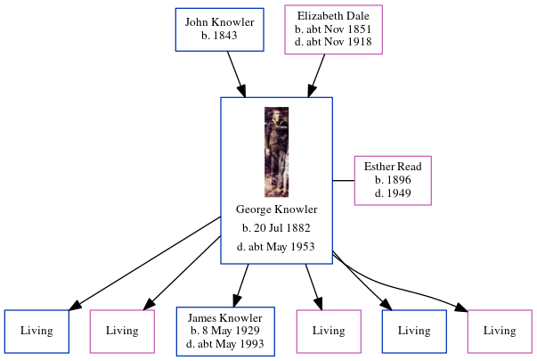

George Knowler 1882 - c1953
[ Home ] | [ Calendar ] | [ Surnames Index ] | [ Census Index ] | [ Family History ]A public work's laborer and the child of John Knowler (a general laborer) and Elizabeth Dale, George Knowler, the second cousin three-times-removed on the father's side of Nigel Horne, was born in Bilting, Kent, England on Jul 20, 18821,2,3,4, was baptized in Godmersham, Kent, England on Aug 13, 1882 and married Esther Read (with whom he had 6 children: William E, Celia, James George, June, Raymond and Julia, along with 5 surviving children) in Faversham, Kent, England around Feb 19155.
During his life, he was living in Godmersham on Apr 5, 18916; and at 3 Roundoast Cottages, Vicarage Lane, Ospringe, Kent on Sep 29, 19391. He served in the military from 1908 to 1919 (service number: 298670).
He died c. May 1953 in Sittingbourne, Kent, England4.
Parents
- John was born in 1843
- Elizabeth Ann was born c. Nov 1851
Children
- James George was born on May 8, 1929
Citations
- 1939 Register - Findmypast (was the head of the household)
- British Royal Navy Seamen 1899-1924 - Findmypast
- England & Wales births 1837-2006 - Findmypast
- England & Wales deaths 1837-2007 - Findmypast
- England & Wales Marriages 1837-2005 - Findmypast
- 1891 England, Wales & Scotland Census - Findmypast (was age 8 and the son of the head of the household)
Media
George Knowler

England Births & Baptisms 1538-1975 - R_885311855
England & Wales Births 1837-2006 - BMD/B/1882/3/AZ/000331/142
Kent Baptisms - GBPRS/CANT/B/96373922
England & Wales Deaths 1837-2007 - BMD/D/1953/2/AZ/000551/026
1939 Register - TNA/R39/1716/1716F/011/41
England & Wales Marriages 1837-2005 - BMD/M/1915/1/AZ/000515/062
British Royal Navy Seamen 1899-1924 - GBM/ADM188/48029
Family Tree
Generated by ged2site. Last updated on Jun 11, 2024